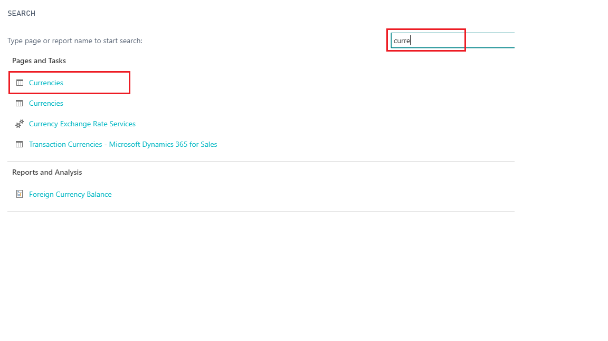
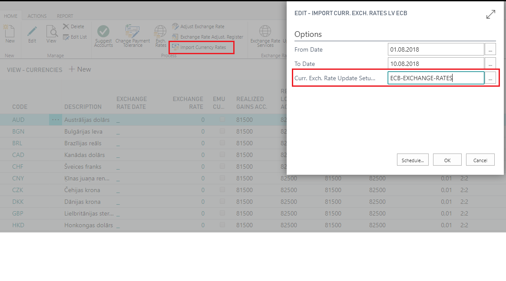
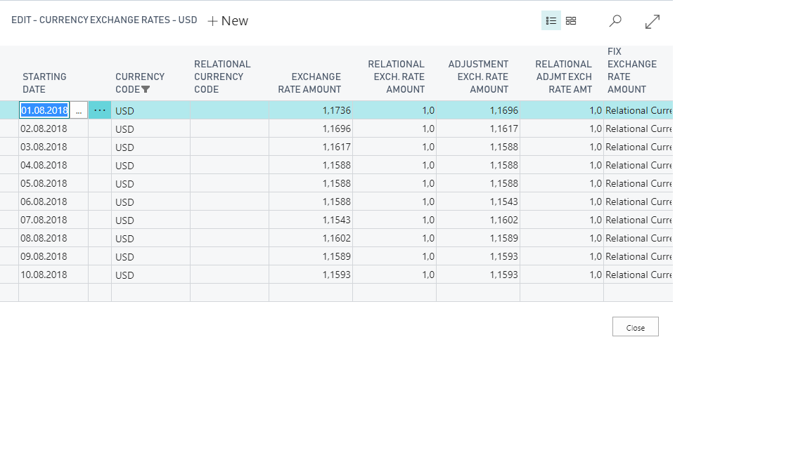

FAQ
Is a specific Role Center required for use of your application?
In order to use Latvian Base Localization, no specific role center is required.
Is there a list of basic settings to be completed for using your app?
Basic necessary system setup for the use of Latvian Base Localization is created, when applying the configuration package LVI.LVI.STANDARD. For detailed guidance and images please review Help section: Configuration Package Import
Our company does not have a Finance Manager only a CEO and Accountant. How we should configure company information?
Select the Accountant employee card for Finance Manager. In case the Accounting Manager is not selected in Company Information, the in the printouts the Finance Manager data shall appear instead of Accounting Manager.
By mistake we have entered two identical customer cards for a non-VAT payer company. Is there any kind of control on this?
A non-VAT payer company has a company registration number. It is possible to setup registration number check for customers in Sales &Receivables Setup by selecting an option:
- None- registration number is not controlled; two or more customer cards may exist with the same customer company registration number
- Message – the system gives a message, if a user is entering a registration number for a customer that already exists in the system
- Error – Customer Company Registration number is required to be unique for customer cards
Our company delivers goods to customer using transporters, but each time the servicing company provides a different vehicle. Is it possible not to use that catalogue?
Yes, it is possible not to use the Transporter catalogue per each vehicle, you may enter the Transporting Company details in list of Transporters and add the vehicle information on sales/purchase/transfer documents by editing the field. For Printing Options use Print Transporter “From Document”.
When we try to create a payment file from a payment journal, the lines turn red and the file is not created. What is the cause?
Please refer to Payment File Export fact box, the system has a control at place, if any mandatory information required by bank payment rules is missing. The most common issues can be missing country codes and or company registration numbers for vendors, missing SWIFT code or IBAN in the Vendor Bank card; missing data in company information company registration number, country code; missing data in bank account card – country code, Bank account No., SWIFT code, IBAN.
Our company is receiving foreign incoming payments from customers, in some cases we do not assign foreign payment code when transaction is posted. Is it possible to add the transaction to the foreign payment report afterwards?
If the foreign payment code is not assigned when posting payment journal or reconciliation journal line, then the foreign payment code cannot be assigned to bank ledger entry afterwards. In such cases the entry needs to be reversed and posted once more, but with assigning the foreign payment code.
The exchange rate services did not update the currency exchange rate in the morning. Can I upload the rates manually?
In order to use the functionality manually, the following steps are required:
- Click on the button Search for Page or Report...

- Type Currencies and select Currencies from Pages and Tasks

- Press Import Currency Rates

- Define Import Currency Rates options Options:
- From Date – set the period start date for import
- To Date – set the period end date for import (by default is set to today)
- Curr.Exch. Rate Update Setup – select the setup code, that was uploaded in the system by LVI.LVI.Standard configuration package ECB-EXCHANGE-RATES

When preparing foreign payment report, I receive a blank page, but we had foreign incoming payments for this period. What is wrong?
The information in the report appears if only you have assigned the foreign payment code, before posting payment journal or payment reconciliation journal. If there are transactions posted without assigned foreign payment code, then the report comes blank as for there is no data for the report.
We have printed a sales prepayment invoice from sales order and posted sales prepayment invoice. Currently we need to print LV Sales Prepayment Invoice once more, because the customer has lost it.
After Sales prepayment invoice is posted, it is possible to print LV Sales Invoice from Posted Sales Invoice, but it will not indicate that it is a prepayment. According to the process, LV Sales Prepayment Invoice need to be printed before sales prepayment is posted. Sales prepayment invoice is posted only at the point, when sales prepayment is received, that ensures ability to print out LV Sales Prepayment Invoice from Sales Order.
Values in Inventory Write-Off document do not match the values in Posted Inventory Write-Off document. What is the reason?
When printing the document from unposted item journal lines, the unit cost may not be actual; therefore it is advised to print Posted Inventory Write-off document, using additional filters on item ledger entry in printing options for Item Ledger Entry.
Fixed asset physical inventory document printout has lines for comments to be added, but there is no such option in printing options. How can I add the comments?
Comments can be added by saving this document as Word file.
When I export the payment file for bank from payment journal and upload it to banking online, the file is rejected because information to recipient. How can this be corrected?
Number of symbols allowed in information to recipient vary from bank to bank, therefore go to particular payment journal line and remove some symbols in field Message to Recipient. Afterwards payment file needs to be exported once more and uploaded to Banking online.